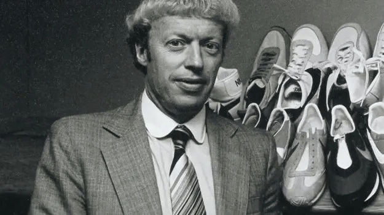
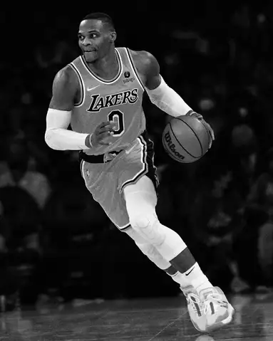
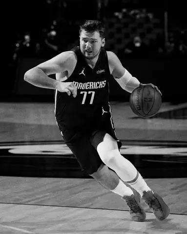
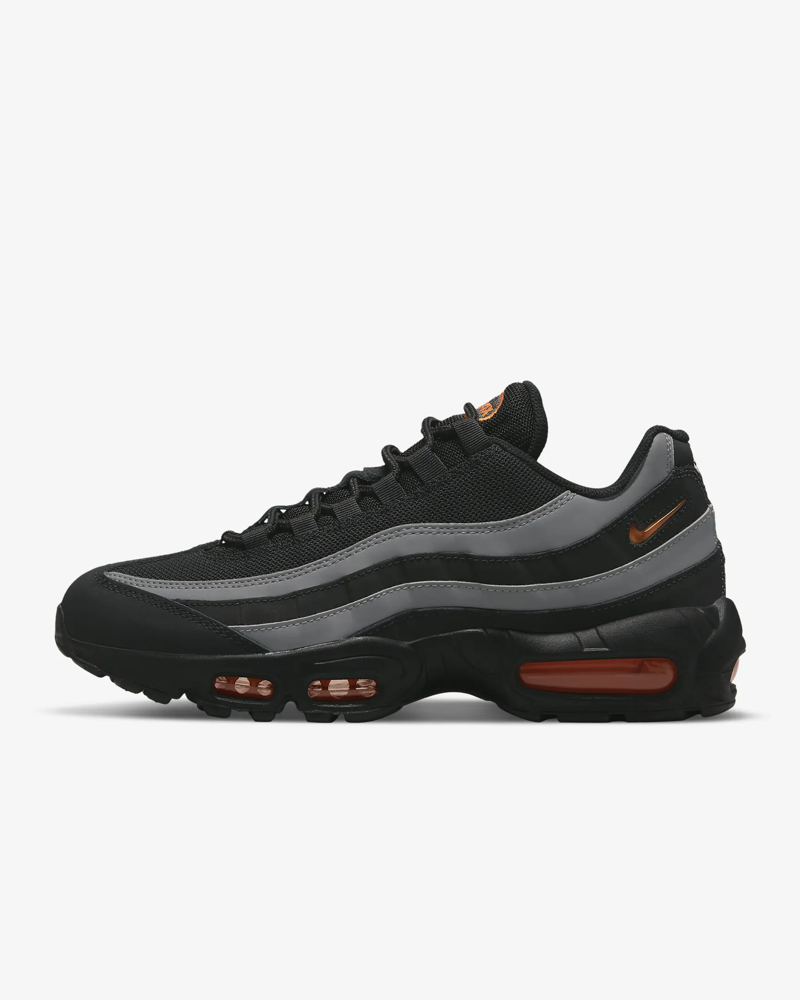

ИСТОРИЯТА НА NIKE
Nike категорично е един от съвременните символи на спорта, активния начин на живот и най-вече комфорта. По официални данни през 2009-та година Nike официално е обявена за най-голямата спортна компания в света. През 2019-та година са изнесени данни, че ежедневно на всяка една секунда по цял свят се продават близо 25 чифта обувки с марката Nike. Това е една малка, почти незначителна част от рекордните постижения на бранда. Истината е, че за сегашното му успешно състояние и популярност може да се говори с часове, с много големи цифри и най-вече с огромни списъци с имена, кланящи се на марката. Но като всяка друга известна компания и Nike си имат своето начало и първи стъпки. А те не са били нито лесни, нито толкова славни. Как е започнало всичко? Каква е историята на Nike? Ако ви е интересно да разберете, останете с нас.
КОЙ Е ФИЛ НАЙТ?
Историята на Nike започва с историята на един човек, който вярва, че победата идва само при смелите. Това е човек на постоянството, на упоритостта, но също и на идеята, че мечтите се сбъдват, ако за тях сме готови да работим. Той се казва Фил Найт и по подобие на много големи бизнес лидери и неговата история започва в съвсем обикновено скромно семейство. То обаче успява да изучи Фил и още докато е в университета, силно се увлича по маркетинга. Години по-късно именно с маркетингови подходи Фил Найт ще успее не просто да се нареди до първоначалните лидери в сектора със спортни стоки, немските компании Puma и Adidas, а дори и ще ги задмине. Именно тези две марки са фокуса на дисертацията на Фил Найт, която той подготвя по повод завършването на своята магистратура по администрация и бизнес към Станфордския университет в Калифорния. Докато я подготвя, Найт осъзнава, че е време срещу тези два гиганта да се появи ново име, защо не и американско? Дали обаче той е осъзнавал, че именно неговата компания ще успее да се превърне в отпор на немските спортни производители?

ИСТОРИЯТА НА КОМПАНИЯТА
Всичко започва през 1964 година. Историята на Nike започва под друго име – Blue Ribbon Sports – а Фил Найт работи с треньора си по бягане на дълги разстояния от университета, Бил Бауърман. В началото тяхната фирма е малка и с доста неясно бъдеще. Двамата партньори обаче са методични в действията си и вярват, че рано или късно ще постигнат успеха, за който се борят. Те стартират с една нестандартна идея, която на този етап няма аналог в световната икономика. Найт и Бауърман започват да препродават маратонки в САЩ, закупувани от японска компания, позната днес като Asics. В началото продажбите са се извършвали буквално на полеви условия, в мобилен фургон. С времето обаче Найт и Бауърман осъзнават, че са готови. Готови са да създадат свой собствен бранд. Всичко започва, когато Бауърман изравя стар чифт маратонки от гардероба на жена си. Найт харесва конструкцията им и я определя като излята по крака, което пък го вдъхновява за първия му собствен проект. Първите обувки на Nike се произвеждат в Канада, но по-интересното е, че за техния дебют двамата съдружници работят години наред, за да изпипат всичко до най-малкия детайл. Найт осъзнава, че ако не стартират ударно, мечтата им да се превърнат в реални конкуренти на Puma и Adidas няма шанс.
КАКВО ОЗНАЧАВА МАРКАТА NIKE?
След като е готова първата партида от собствената серия маратонки на компанията, нейните създатели осъзнават, че е настъпил момент за промяна на тяхната марка. Найт се досеща как негов близък човек му е намекнал колко е важно името на един бранд. Името трябва да е кратко, но красноречиво, да се запомня лесно, но и да има послание. Така на бял свят се появява и марката Nike, която между другото се произнася като Найки. Името е посветено на древногръцката богиня на победата Нике. И макар в началото на всеки голям бизнес успех да има и доза неувереност, по всичко личало, че Нике ще донесе победа и на Найки. Интересна е и историята на логото на компанията. То е закупено за едва 30 долара от американска студентка. Самият Найт изобщо не харесал логото и експертите още се чудят защо все пак той е решил да заложи именно на него…
КОИ СА НАЙ-ИЗВЕСТНИТЕ СПОРТИСТИ, КОИТО НОСЯТ NIKE?
Победата категорично белязва марката Nike още с първата й собствена линия спортни обувки. Успехът следва компанията и през идните години докато тя се разраства и започва да създава не само маратонки, но и дрехи, а в последствие дори професионална екипировка. Nike се превръщат не просто в адекватен отговор на дългогодишното немско лидерство в сектора, а в техен основен конкурент, който е на път да ги унищожи и по годишни продажби, и по репутация. За второто доказателство е огромният списък от спортисти, които стават верни фенове на марката. Голяма част от тях са дългогодишни лица на Nike. В списъка влизат огромни имена като Карл Люис, Андре Агаси, Марион Джонс, Тайгър Уудс, , Рафаел Надал, Леброн Джеймс, Роналдо и дори самият Майкъл Джордан.


.webp)
КОИ СА НАЙ-ПРОДАВАНИТЕ МОДЕЛИ ЗА ВСИЧКИ ВРЕМЕНА?
През 1977-ма година бившият авиокосмически инженер Марион Франклин Руди представя голямата Air иновация на Фил Найт. Идеята й да се поставят малки въздушни възглавници в подметките на обувките, за да се смекчи удара при всяко движение. След създаването на прототип, първата обувка, която включва въздушно омекотяване, е Nike Tailwind от 1978 година. По този начин спортният свят преживява истинска революция – Nike Air революцията. И до сега най-продаваните маратонки на марката са от серията Air. По-конкретно става въпрос за Nike Air Force 1, превърнали се в емблема за американската компания. Други изключително популярни класически маратонки на марката са Nike Blazer, Nike Dunk, Nike Air Max 90, Nike Air Max 95, Nike Air Max 97, Nike Air Max 270 и др.
